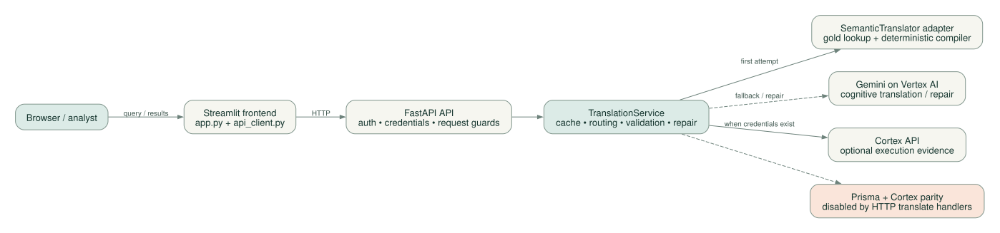

Translation
What target query represents this source query? The parser, mapping tables and emitter do most of this work. A gold lookup or Gemini can also supply a candidate.
Understand the system before trusting the output.
This project translates Prisma Cloud RQL into Cortex XQL. Its strongest foundation is a deterministic compiler. A FastAPI service adds reference examples, AI fallback, validation, feedback and an intended training lifecycle.
Two user-facing applications: a Streamlit UI and a modular Python backend. Most boxes in the architecture are modules inside that backend. The learning jobs have a different lifecycle and are only partially connected in the current code.
What target query represents this source query? The parser, mapping tables and emitter do most of this work. A gold lookup or Gemini can also supply a candidate.
Does it parse, execute, and return equivalent results? These are separate levels of evidence. Several current flags blur those levels.
Can a correction improve future answers? Local feedback, prompt context and model fine-tuning are different mechanisms. The automatic training loop is not yet end-to-end reliable.
Switch views to explore the runtime, compiler, learning flow, deployment and static dependencies. Open an SVG for full-resolution inspection or download it for a presentation.

Grounding: TranslationService:169 · Compute Engine definition:1 · KFP components:51
This is a recorded local compiler example plus a source-based explanation of the surrounding service. It does not call your tenant or a model.
The compiler turns a string into an intermediate representation (IR): a structured description of sources, predicates, joins and projections. The emitter uses schema and mapping data to produce XQL. The older engine interface now adapts that compiler for the rest of the application.
A AND (B OR C) is a tree, not a sequence of replacements. Arrays, joins and nested JSON need structure to preserve meaning. Typed IR nodes make those rules inspectable and testable.
Reverse XQL→RQL translation also exists, but it does not run the same target validation path. The primary service and learning workflows focus on RQL→XQL.
Dataset profiles, API-to-asset-type mappings, operators, field aliases and schema files inform the resolver. Known fields can map directly; unknown ones may fall back to JSON paths with heuristic provenance.
This separation of logic and knowledge is a strong design choice. It needs consistent diagnostics through the service boundary.
The compiler’s is_valid describes local validation. Its parity_rate=1.0 is a heuristic derived from validity and review status, not a live result comparison. The recorded unknown-field example demonstrates why the distinction matters.
A normalized query can match a saved RQL/XQL pair directly. This is a reference-answer shortcut. It does not update a model’s weights.
The checked-in corpus has 673 rows and 652 normalized lookup keys. A successful lookup says the answer was stored, not that it was freshly validated.
Gold examples, language references, schemas and expert overrides form a large reusable prompt prefix. Vertex context caching can reuse that prefix.
This is many-shot in-context learning. Its knowledge version and cache lifetime should be visible in result provenance.
Training preparation combines positive pairs, hindsight and repair examples, then splits data for tuning and evaluation. A Vertex job can train a model.
The automatic runner currently fails on a tuple/list mismatch. Evaluation and model-alias promotion in the tuning helper are simulated.
| Topic | What the code establishes | Implication |
|---|---|---|
| Microservices | UI process, API process, optional batch workers | Backend packages are module boundaries, not separately deployed services. |
| Cloud Run | Terraform targets Compute Engine; older Cloud Run artifacts remain. | Deployment assumptions have diverged. |
| Live parity | Service support exists; HTTP translate handlers set parity off. | A request flag does not enable it through those routes. |
| Self-improving loop | Local writers, batch DAG and training utilities exist; handoffs are incomplete. | Do not infer a working autonomous loop from the diagram. |
| Blind benchmark | Gold lookup is not fully disabled. | Existing scores need evaluation-context qualification. |
Keep synchronous translation as a well-bounded modular service. Give learning its own durable jobs, versioned datasets and independent evaluation. Splitting every Python package into a microservice would not resolve the current correctness and state problems.
Read the evidence and improvement summary →All 147 Python files are indexed, including tests and utilities: 2,114 function definitions and 321 classes. Search a filename, class, function or module description. Expand a file to inspect its symbols and import dependencies.
This is a static definition/import index, not an exhaustive runtime call graph. Dynamic dispatch, framework registration and remote services require the manually traced maps above.
The unit and compiler suites ran on an isolated copy with outbound internet sockets blocked and dummy cloud credentials. Compiler-specific tests: 283 passed, 4 skipped. The 21 suite failures include stale expectations, route-contract changes and shared-cache interference; they are not 21 independently proven production bugs.
419 tracked files inventoried; every Python file parsed for definitions and imports. Detailed review followed API entry points, compiler and mapping boundaries, fallback/repair, validation, caches, learning, training/evaluation, Docker, Terraform and CI. Static review covered supporting modules and data formats.
This is a broad architectural and correctness review with targeted reproductions, not a claim of exhaustive line-by-line verification or a formal security audit.
No production tenant queries, Vertex generation/tuning, cloud deployments or Docker image builds were executed. The original lockfile could not install because of pywin32; the test environment used Python 3.13 and a separate dependency set, not an exact production image.
Deployment conclusions describe checked-in configuration. Actual runtime configuration may differ. Application source was left unchanged.
Use an isolated copy of the reviewed commit. The probe script contains review-time temporary paths; adapt those paths before reuse. No real credentials are required for these probes.
PYTHONDONTWRITEBYTECODE=1 PYTHONPATH=/path/to/probe-tools:/path/to/copy/backend GOOGLE_APPLICATION_CREDENTIALS=/path/to/nonexistent-credentials.json python -m pytest -p offline_guard tests/unit tests/rqlxql -q --tb=short
Run from the copied backend directory. Download the outbound-socket guard. The guard blocked internet sockets in this local Python run; it is not a general-purpose security sandbox.